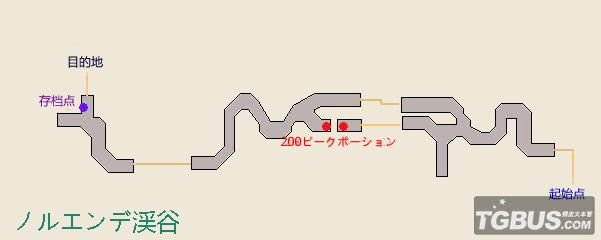
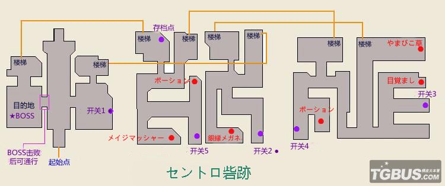

序章 身处绝望的深渊
醒来的提兹被告知自己的村庄已经毁灭了。
-左下角离开旅馆
-右上角与卡鲁迪斯拉国王交谈
Tips：事件触发地点都会以颜色在地图上提示
国王向提兹的不幸遭遇表示了哀悼。提兹表示自己无论路途如何危险，自己都想再去村庄看一次，确认是否还有其他幸存的人。
-由大地图前往ノルエンデ溪谷
*职业/技能教学
*BP战斗教学
Tips:A键可战斗快进
ノルエンデ溪谷

穿越溪谷的提兹遇到了一个面对着废墟喃喃自语的少女。
“现在正在看着这一切的你。”
“现在不知道正在何方的你。”
“我的祈祷，是否能传达到你那里呢？你是否也正在看着我面前的一切呢？”
“如果继续这样下去，世界大概就会逐渐崩塌了吧。”
“我真的能阻止这场灾难么。”
正在两人交谈之时，空中出现了阿塔尔尼亚骑士团的飞艇。
面对骑士团的炮击，提兹毫不犹豫的伸出了把妹之手，带着妹子逃避追击。
两人逃至溪谷内，不料骑士团依然紧追不舍。
-战斗1 空艇骑士团剑兵，HP80，弱雷，技能弱者狙击。
-战斗2 空艇骑士团剑兵，HP80，弱雷，技能弱者狙击。
-战斗3 空艇骑士团剑兵HP80，弱雷，技能弱者狙击；空艇骑士团弓兵，HP80，弱雷，技能弱者狙击。
*Party Chat教学
逃出生天的两人互相介绍了姓名。
少女的名字叫阿尼艾斯·奥布莉。风水晶精灵也出来卖了个萌。
阿尼艾斯向提兹说明了情况。原来这个世界受到水晶的庇护，人们才能安居乐业。由于水晶被污染，世界有可能逐渐步入黑暗，甚至毁灭。为了防止这样的事发生，她才前来调查这个大洞。
说明了一切之后，阿尼艾斯便准备离开了。
-原路返回
提兹向阿尼艾斯请教消除火焰，填补谜之大洞的方法。得知需要净化被污染的分布在世界四处的四枚水晶。被灾祸夺走了一切提兹毅然决定协助阿尼艾斯。
阿尼艾斯：我不能让无关的人卷入。
提兹：……怎么会无关呢！我的家人，伙伴，村庄，我的一切，都因为这场灾祸消失无踪了。原本普通幸福的生活，也在一瞬间荡然无存。
提兹：对于我来说，你就是，对，你就是‘希望’一样的存在，你是我的希望呐。所以我也想要出一份力！
但阿尼艾斯还是拒绝了提兹的请求。无奈之下只能先回到城镇。
-原路返回
*通信系统教学
*玩家召唤教学
-向国王汇报（白天限定）村庄的查探情况
尽管村庄已经是一片废墟，但众人还是看到了复兴的希望。国王也承诺支援村庄的复兴。
国王提到最近卡鲁迪斯拉王国因为风之巫女的事一直对本国战事不断，这时阿尼艾斯表露了自己身份，为了不再给国王添麻烦而毅然离开了。
*村庄复兴教学
提兹追上了离开的阿尼艾斯，再一次表达了自己想要帮忙的决心。
阿尼艾斯：说了不行就是不行。我不想让无关的人被卷入进来！”（帅气的转身离开）
提兹：那个，阿尼艾斯！……那个方向，是墓地噢？
阿尼艾斯：……（尴尬）那、那要去湖那边的话，要走哪条路呢？
提兹：就算你坚持拒绝，至少让我来带路吧，这样总可以了吧？
阿尼艾斯：才不要……！
水晶妹子：我的话没有意见哦。阿尼艾斯一个人的话大概永远找不到吧。
阿尼艾斯（垂头）：我、我知道了啦……那就拜托你带路了……
于是三个人就这样向湖进发了。
-向大地图的湖进发
湖
骑士团还是出来捣乱了。
★BOSS战 ベアリング（HP300）&ホーリー（HP200）
Tip：建议首先集中火力解决掉白魔法师。同时注意ベアリング的练气技能。配合BOSS使用技能的节奏可以轻松取胜。一定回合后ベアリング会自爆。
-胜利后 僧侣、白魔道士职业开启
一番苦战终于胜利后，阿尼艾斯发现了自身的无力，终于接受了提兹的帮助。两人决定先回城镇搜集消息，从长计议。
*转职/技能教学
-返回卡鲁迪斯拉王国
*魔法教学
-向国王汇报
-前往旅馆
熟睡中的提兹被阿尼艾斯叫醒，原来有人纵火，意图逼出风之巫女。
オミノス病态癫狂行径竟然也引起了同行少女的不满。再三阻拦之下，终于决定退兵。
就在阿尼艾斯再次打算单独承担责任，提兹抱怨道“两个人分担难道不好么”的时候，失忆流浪出现了。
？？：你们就是提兹和阿尼艾斯吧？
阿尼艾斯（惊）：为什么你会知道这种事？
？？：因为都写在这本笔记里嘛。这是丧失记忆的我唯一拥有的东西了。这里写着很多有趣的东西呢，比如说你们打算填上那个大洞什么的。
阿尼艾斯：……！
？？：并且这本笔记上还写着，你们之后将会和某个女性相遇，恐怕就是刚才和那个纵火的男人在一起的少女吧。
提兹：这和我们有什么关系么？
？？：你们现在打算去セントロ砦跡对吧？也带上我吧。对那个少女，有些在意呢……刚才袭击的时候看到了她的脸，那张尚留稚气却又异常勇敢的脸，简直像盛开的鲜花那样让人陶醉呢。想要聆听她微风一般的声音，想让她用那样的声音呼唤我的名字，这就是从我心底涌出的冲动呐。所以拜托了，请让我和你们同行吧！←死花痴你够了……
阿尼艾斯：……拒绝！请不要说些没头没脑的话。
？？：为什么！我明明都这么诚心诚意地请求了……
阿尼艾斯：因为像你这样的人不值得信用。
提兹：……嘛，怎么说呢，战斗力还是越多越好吧……
兵士长（怒刷存在感）：这个男人，虽然人品值得怀疑，但战斗还挺有一手的呐。曾经捕捉过野猪噢。
阿尼艾斯：……那、既然提兹说没问题的话……
？？：非常感谢！
提兹：还不知道你的名字……
？？：我叫林格阿贝尔。请多多关照。巫女啊，从现在开始，我就是你的剑了！
阿尼艾斯：没有这种必要。
*D的笔记教学
-由大地图前往セントロ砦跡
セントロ砦跡

另一方面，刚才的正义少女果然和病态魔法师起了争执。在门外听到少女声音的花痴君一阵悸动，奋不顾身地决定去救她。
-打开机关开门前进
★BOSS战 オミノス（HP1000）
Tips:此BOSS会使用沉默/毒/催眠等异常状态。请去魔法屋购买异常恢复魔法，并且做好补给工作。稳扎稳打就能轻松胜利。
-战斗后黑魔导师职业开启
背叛了同伴的伊蒂亚陷入了进退两难的处境。
伊蒂亚：背叛了国家什么的，绝对不可能被原谅了吧……不过我并不后悔。因为我相信我自己的本心。啊啊，说起来我已经是逃兵了呢，不如我就加入你们吧～（闪亮）
林格：欢迎之至。让我们为了命运的相逢干杯吧（闪亮）。
阿尼艾斯：……我可没说我同意了啊……（闪亮不起来）
尽管阿尼艾斯再三反对，但对着一个KIRAKIRA的妹子又怎么能说出拒绝的话呢。正在纠结之中，私人发现骑士团的飞艇正在向城镇进发，意图进行炮击。这种事正义的伙伴们当然不能置之不理，于是四人返回城镇。
-返回卡鲁迪斯拉王国
四人以最快的速度赶了回去，却只发现了一片狼藉。气息奄奄的欧文骑士长在临终之时嘱托提兹救回国王，拯救王国。
四人向旅馆主人，欧文的父亲传达了儿子的死讯。
“啊，不过，为了守护自己的国家战至最后一刻，那也是他的心愿吧……”
伤心的大叔表示自己要一个人出去散散心。
正义感极强的伊蒂亚表示一定要向阿塔尔尼亚公国进行报复，却被阿尼艾斯以“那始终是你的国家吧”为由拒绝了，伊蒂亚一气之下出走。
-前往左上墓园
伊蒂亚遇上了沉浸在儿子死讯的悲伤之中的旅馆大叔。
大叔：呐，可以和我说说话么。
伊蒂亚：啊？嗯，当然没问题了。
大叔：欧文那个小子啊，小的时候，其实是个身体很弱的孩子呢。但是，因为深爱着这个国家，于是一直以成为军人为目标拼了命的锻炼。成为了这个国家的战士之后，不断的磨练自己的技艺，获得了不少功勋。这样的儿子，正是我的骄傲啊。
大叔：但是，果然……还是更希望他能够活着呢。没想到现在却白发人送黑发人……如果他没有当兵，而是继承了旅馆的话，也就不会发生这种事了吧。
伊蒂亚：……正义和邪恶（白与黑）……么……
另一边阿尼艾斯和林格还在纠结是否让他们一起加入旅行的事。此时，悟道了新奥义（大悟）的伊蒂亚又归队，表示自己无论如何都要贯彻自己的正义，并且ロンターノ離宮守卫异常森严，有自己在一起的绝对会事半功倍的。阿尼艾斯终于被说服，同意四人一起前往ロンターノ離宮。
-由大地图前往セントロ砦跡
*必杀技教学
-前往ロンターノ離宮
ノンターノ離宮
四人潜入ノンターノ離宮，但结果还是暴露了。
Tips:此处士兵怪多弱雷，请记得去魔法屋购买雷属性魔法
-战斗 空艇骑士团剑兵/枪兵/弓兵 HP120，弱雷。
-探索至3F，战斗 空艇骑士团剑兵/枪兵/弓兵×2
★BOSS战 ハインケル（HP2000，弱雷，魔防高）出场附带弓兵×2
Tips: 建议上手第一轮解决小怪。此BOSS魔防较高，请使用物理攻击。回复1人足够。稳扎稳打即可过关。
-胜利后骑士职业开启
战胜了骑士之后，四人却面临着另一个问题——没有人会操作空艇。关键时刻，林格爆发了小宇宙（误），空艇成功（？）降落在了湖里。
-返回卡鲁迪斯拉王国
-前往王宫
四人救回了国王，得到了新交通工具飞艇，林格因为会驾驶飞艇找到了死皮赖脸留下来的理由，至此，他们正式踏上了拯救世界的旅途。
-由大地图找到飞艇
*飞艇教学
-将飞船停至“！”处，触发剧情